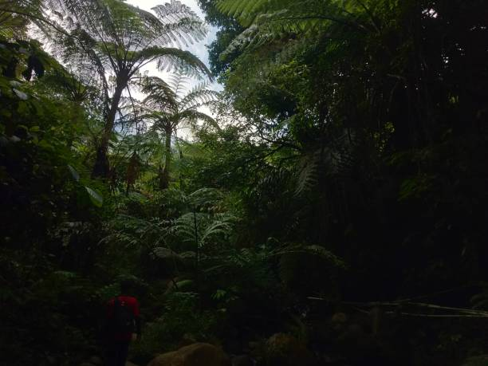
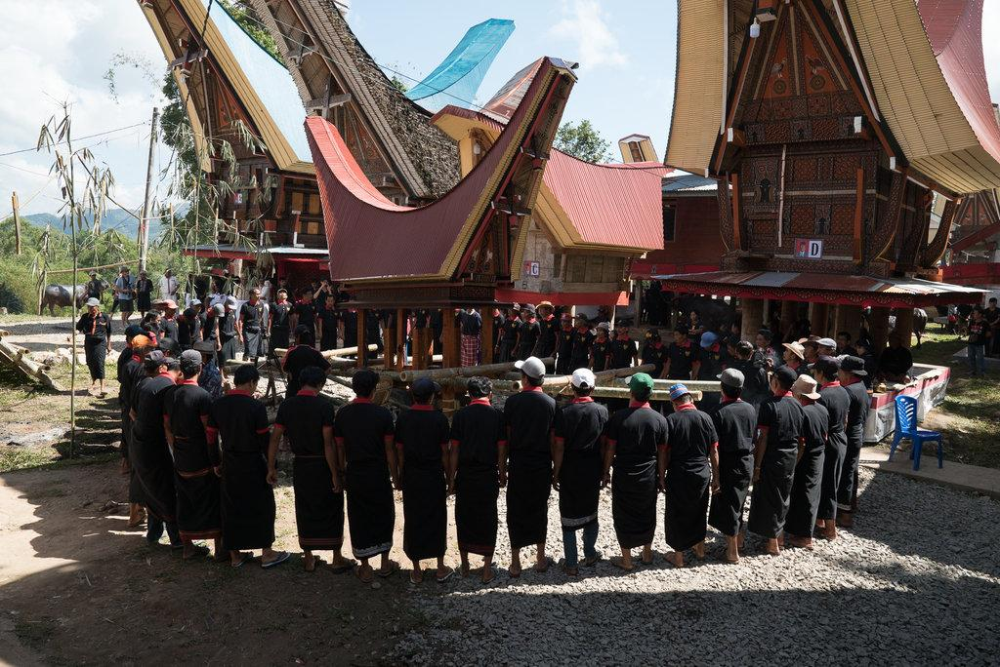
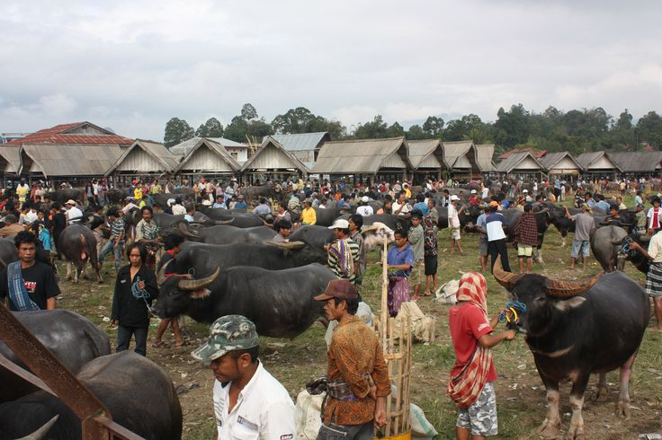
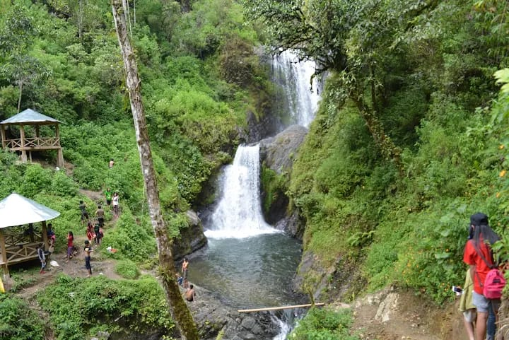
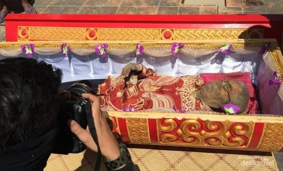

Top 10 Experiences

Sunrise di Lolai
Melihat indahnya matahari terbit di negeri di atas awan.

Kuliner Tradisional
Belajar memasak makanan khas Pa'piong di rumah warga.

Trekking Batutumonga
Menjelajahi sawah dan desa adat dengan berjalan kaki.

Upacara Rambu Solo
Menyaksikan ritual pemakaman adat masyarakat sekitar.

Kuburan Tebing Lemo
Melihat makam yang dipahat di tebing dengan patung Tau-Tau.

Pasar Tradisional "Pasar Bolu"
Pasar dengan penjualan kerbau khas Toraja, serta hewan dan jajanan lain.

Bukit Ollon Valley
Padang rumput hijau, cocok untuk camping.

Desa Adat Kete Kesi
Menjelajahi rumah adat Tongkonan dan ukiran khas Toraja.

Air Terjun Sarambu Assing
Air terjun tersembunyi dengan suasana alam yang menyegarkan.

Ritual Ma'nene
Ritual adat membersihkam dan mengganti pakaian Jenazah.